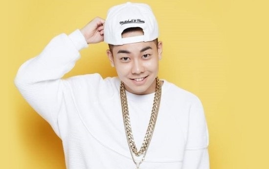
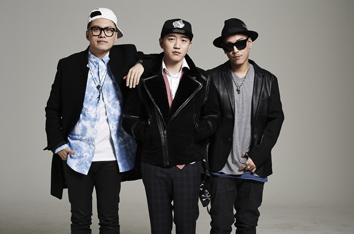
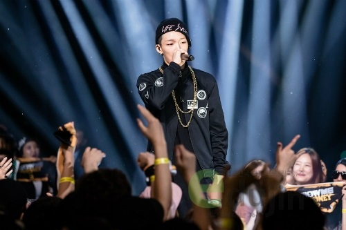
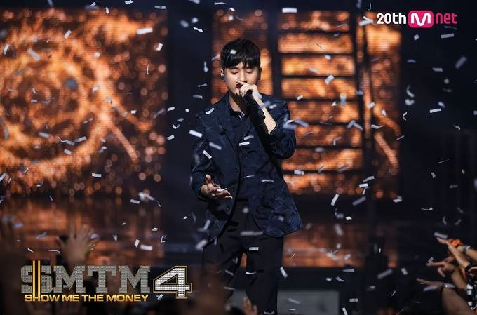
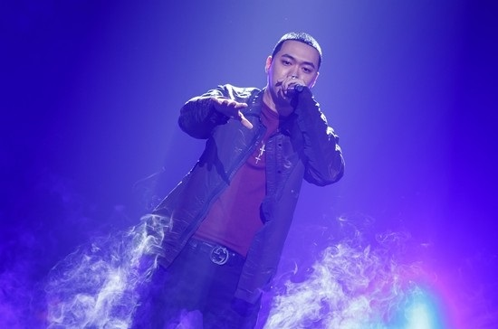
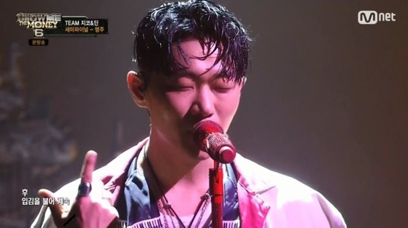
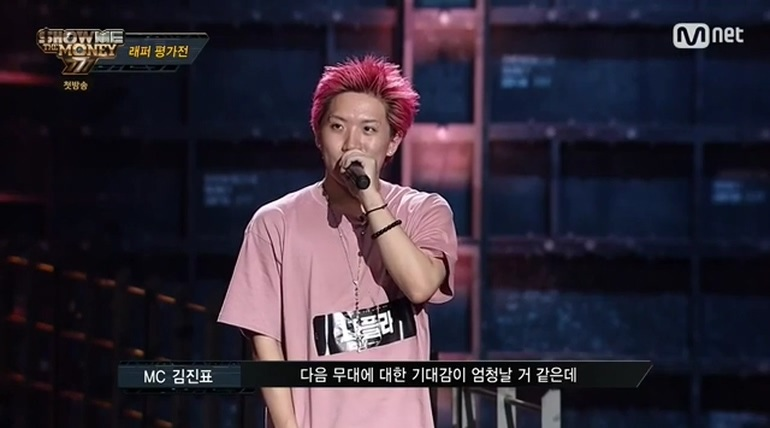
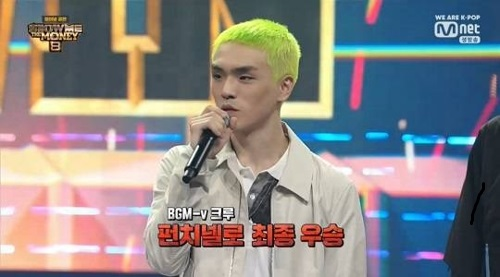
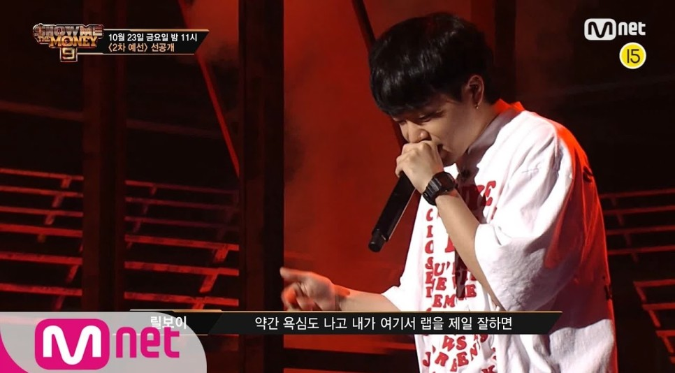

쇼미더머니 역대 우승자 1~9시즌 !! 두두둥장
시즌1(2012) : 로꼬

본명 : 권혁우
출생 : 1989-12-25
현 소속사 : AOMG
쇼미더머니 역대 최초의 우승자이자 역대 우승자중 가장 성공한 케이스 또한 쇼미더머니 역대 최초의 일반인 우승자임.
시즌2(2013) : 소울 다이브

멤버 : 넋업샨, 지토 ,디테오
쇼미더머니 역대 최초의 그룹 우승자. 그룹명의 뜻은 그들의 음악을 듣는 사람들이 본인들의 영혼에 빠지게 만들겠다는 의미
시즌3(2014) : 바비

본명 : 김지원
출생 : 1995-12-21
현 소속사 : YG
다른 래퍼들에 비해 굉장히 어린 나이에 우승을 하였고 프로듀서였던 도끼와 더콰이엇과 함께 매회차 역대급 무대를 선보임.
쇼미더머니 역대 아이돌 출신 우승자
시즌4(2015) : 베이식

본명 : 이철주
출생 : 1986-8-12
현 소속사 : Outlive(본인이 소속사 사장)
베이식은 과거 2000년도 후반~2010년도 초반까지 힙한씬에서 유명했던 래퍼였음. 역대 최초 생방송 우승자. 최근 가짜사나이 출연.
시즌5(2016) : 비와이

본명 : 이병윤
출생 : 1993-6-15
현 소속사 : 데자뷰 그룹(본인설립)
비와이는 쇼미더머니 역대 우승자중 제일 크게 성공한 케이스임.
특유의 발음과 명확한 딕션으로 매번 완벽한 문대를 선보임. 또한 매번 쇼미더머니 프로듀서로 활동.
시즌6(2017) : 행주

본명 : 이형준
출생 : 1986-12-10
소속 그룹 : 리듬파워
행주는 그룹멤버인 지구인이 지원한것을 응원하러 갔지만 지구인이 가사를 절어 탈락하자 본인이 현장지원으로 대신 참가함
행주의 대표곡은 "Reu Sun", 행주의 이름으 뜻은 '행복을 주는 사람'이라고 함.
시즌7(2018) : 나플라

본명 : 최석배
출생 : 1992-2-28
나플라는 LA 한인 래퍼로 이름이 알려져 있었고 특유의 발성과 타이트한 붐뱁을 선보인 래퍼
나플라는 첫 무대에서부터 호평을 받아왔으며 시청자들의 극찬을 받음. 하지만 우승후 대마적발로 이미지 타격
시즌8(2019) : 펀치넬로

본명 : 이영신
출생 : 1997-5-8
현 소속사 : AOMG
1차 예선에서 까다롭기로 소문난 비와이로부터 목걸이를 받았으며, 2차예선부터는 확실한 랩스킬로 우승후보로 알려지기 시작함.
하지만 머쉬베놈과의 대전에서 가사를 절어 탈락했지만, 그후 패자부활전에서부터 시작해 우승까지 쇼미 역대 패자부활전 출신 래퍼가 됨.
시즌9(2020) : 릴보이

본명 : 오승택
출생 : 1991-6-7
현 소속사 : 그랜드라인엔터테인먼트
소속 그룹 : 긱스
릴보이는 2011년 그룹 '긱스'로 데뷔하였고 데뷔곡은 누구나 한번쯤 들어본 'Offically Missing You'였음
릴보이는 쇼미4에 출연했지만 탈락하였고, 뛰어난 실력과 경력으로 프로듀서로 참가해도 이상하지 않을정도 였지만 빛을 바라지 못함.
하지만 이번 쇼미더머니9에서 엄청난 발성과 뛰어난 스킬로 대중들에게 우승후보로 각인시켰음
마지막 결승에서는 또 다른 강력한 우승후보인 머쉬베놈을 꺾고 우승하였음.